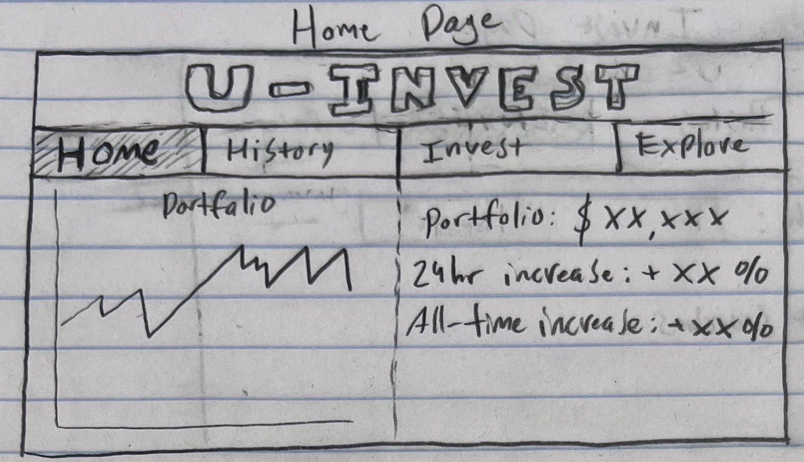
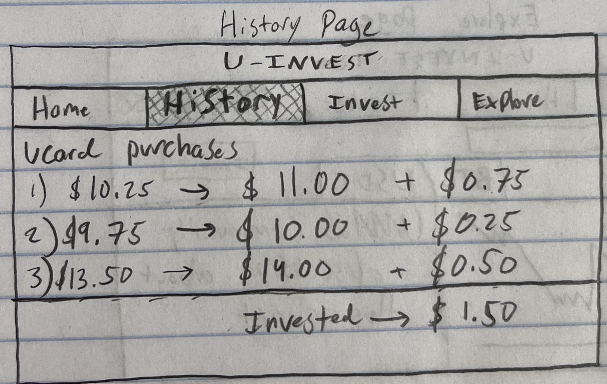

Our Team
Overview
This web application aims to address the pressing issue of environmental conservation through a user-friendly platform designed to educate, engage, and empower individuals to participate in sustainable practices. Targeting eco-conscious individuals and organizations, the project seeks to make a real-world impact by facilitating accessible and actionable environmental activities.
Application Parts
Interactive Map
The Interactive Map is a core feature designed to help users locate recycling centers effortlessly, leveraging real-time GPS data to provide accurate and convenient search results.
Community Forum
A platform for users to share insights, ask questions, and connect with like-minded individuals, fostering a supportive community around sustainability efforts.
Resource Library
An extensive collection of articles, videos, and guides on environmental conservation, offering users a wealth of information to educate themselves on various sustainability topics.
Data Requirements
At the heart of our application lies a robust database of recycling centers, enriched with data such as location coordinates, material acceptance, and operating hours, ensuring our Interactive Map feature provides valuable and accurate information to our users.
Wire Frames
The U-INVEST user interface has been designed to simplify the student investment process, providing a clear user interface with a priority being placed on displaying relevant information. Across the application, the “U-INVEST” title and navigation bar remain consistent on each page, highlighting the text in the navigation bar to indicate the current page.
The Home Page wireframe provides students with all information they would frequently check. This includes the total value of their portfolio, percent changes overtime, and a large graph displaying the value of their portfolio over time. These values will be refreshed each time a student reloads the webpage.
The History Page wireframe shows the student their transaction history via rows and columns with entries. Each row represents a UCard transaction, showing the date/time, the amount the transaction was rounded up to, and the amount rounded up minus the original transaction amount. The bottom of this page will show the total amount the student collected for investments over time.
The Invest Page wireframe allows students to invest the money they collected from rounding up their UCard transactions. This page consists of a large search textbox, where once the student begins typing, search suggestions will appear. Under the search box, the app will display the recent searches along with their dates.
The Explore Page wireframe allows students to explore stock/cryptocurrency charts. The top of this page consists of a search field, title of the current pair being explored, and invest button. The bottom half of the page is split in half, one half is dedicated to the chart of the current pair, and the other half is for community discussion. The discussion section of this page will allow students to discuss the current pair with a chat-style interface. Each pair will have its own unique chatroom.
Real-World Connection
Addressing the urgent issue of waste management, our app aims to simplify the recycling process, encouraging more individuals and businesses to participate in sustainability efforts and contribute to a healthier planet.
Integrative Experience
This project fulfills the IE requirements by being a collection of financial technology knowledge learned both via general education requirements and through personal experience. In order to fulfill the first IE criteria, our team is applying our knowledge of financial markets to a full-stack web application, helping students effortlessly invest their spare change. This project will be a culmination of the knowledge we’ve learned as computer science students by making use of concepts we’ve learned in this course along with many computer science principles learned earlier in our education.
The development process of “U-INVEST” will require the use of General Education learning objectives. Development will involve clear communication between team members to make sure all tasks are done efficiently and in a coordinated manner. We will also use our critical thinking abilities to integrate both existing and new financial data into our application. This will involve the use of many data API’s combined with many mathematical calculations needed to accurately determine students’ investments and portfolio movements. This project is a prime example of applying existing knowledge to new situations; our team has extensive knowledge of both financial markets and technology, this project will combine these two knowledge fields into something entirely new and unexplored.